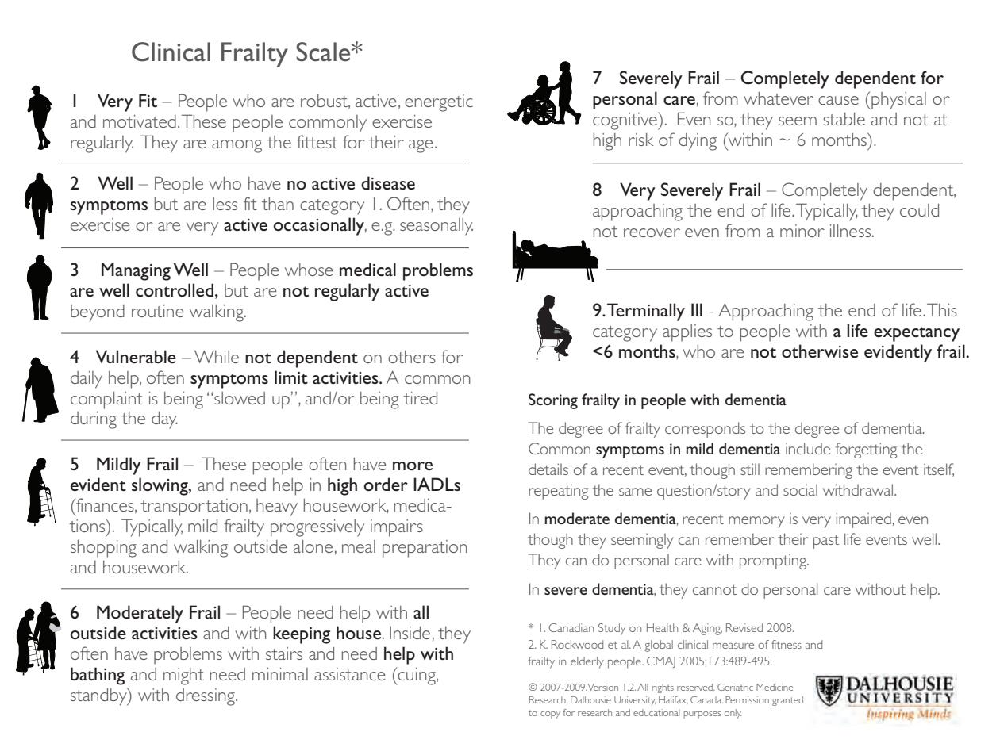
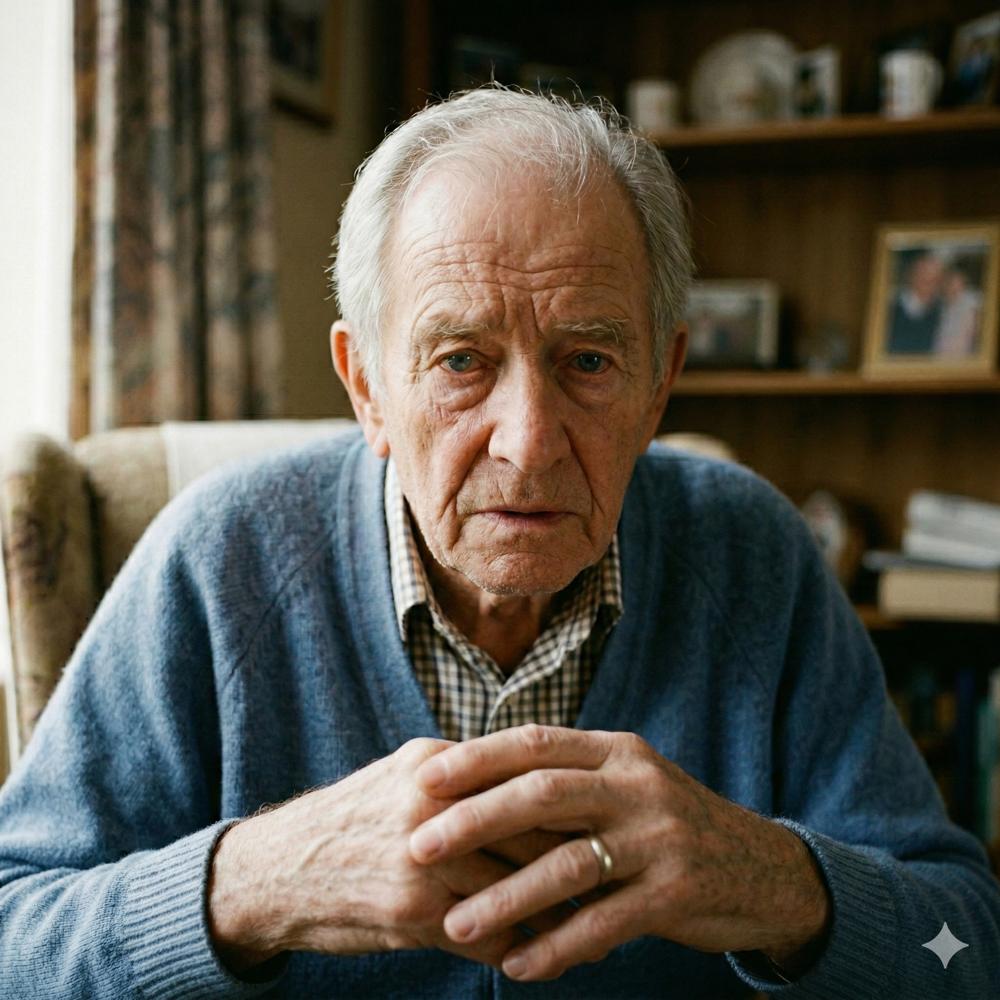

Deterioration
& Recognition
Recognising when a patient's condition is changing — and responding appropriately — is one of the most critical skills in palliative and end of life care. This module explores signs of deterioration, validated tools, care timelines, dying trajectories, and follows the journey of a real case study.
Work through each section in order. The module includes interactive tools, a horizontal care timeline, clickable trajectory diagrams, a clinical case study, and an MCQ assessment.
Clinical deterioration across physical, functional and psychological domains
Validated tools — SPICT™, AKPS, CFS, PIG, Analgesic Ladder, Pain Assessment
The Months–Days–Hours palliative care timeline
Three dying trajectories and the signs of active dying
Learning to the Bob Evans case study and Five Priorities of Care
Recognising Deterioration
In palliative care, deterioration may not follow a predictable or linear path. Recognising it early — across multiple domains — creates a critical window for timely, compassionate intervention.
Increased breathlessness, uncontrolled pain, new or worsening fatigue, reduced appetite, significant weight loss, or new infections — all signal a potential change in clinical condition.
Reduced ability to carry out daily activities, increased dependence on others, spending more time in bed or a chair — often the earliest observable indicator of deterioration.
Increased anxiety, withdrawal, changes in mood or communication. Psychological deterioration is as clinically significant as physical change and must not be dismissed.
Altered consciousness, changes in vital signs, unexpected admissions, or new condition-specific markers all warrant structured reassessment using a validated tool.
Recognition & Identification Tools
Select each tool to view the full document, understand when to use it, and why it matters in palliative care practice.

A validated trigger tool developed at the University of Edinburgh. Identifies people whose health is deteriorating who may benefit from holistic needs assessment and advance care planning.

A validated 11-point functional status scale used to rate a patient's ability to perform everyday tasks and track functional trajectory over time.

Enables earlier identification of people who may need additional supportive care as they near end of life. Applicable to all conditions, all settings, and all care providers.

A validated 9-point frailty assessment. Scores ≥5 indicate significant frailty; scores ≥7 may indicate the patient is approaching end of life and should prompt ACP review.
The three-step WHO analgesic ladder provides a structured framework for cancer pain management — guiding appropriate analgesia from non-opioid through to strong opioid therapy with adjuvants at each step.
A structured model for assessing pain in palliative care settings. Recognises that pain is multidimensional — accounting for physical, psychological, social, and spiritual components of a person's total pain experience.
Timeline of Palliative Care
Palliative care is not a single moment — it evolves as a person's condition changes. Select a phase below to explore what care looks like at that stage.
- Palliative care can begin at the point of diagnosis and continue for months or years alongside active treatment.
- Focus is on managing symptoms of chronic conditions — heart failure, COPD, Parkinson's, cancer — to maintain quality of life.
- Involves regular MDT assessments: nurses, doctors, social workers, counsellors, and allied health professionals.
- If a condition is declining on a monthly basis, the focus begins to shift toward comfort and proactive planning even while the person remains active.
- This is the optimal time to begin Advance Care Planning conversations — before a crisis occurs.
- As illness progresses, care becomes more intense — more frequent visits and support in a hospice, hospital, or home setting.
- In the final weeks and days, focus shifts to managing increased pain, fatigue, and breathlessness (dyspnoea) proactively.
- Care focuses on helping the patient feel comfortable and offering psychological and spiritual support to both the patient and family.
- Anticipatory prescribing should be in place; advance decisions reviewed; preferred place of death documented and shared.
- All members of the MDT need to know the patient's wishes — including out-of-hours services and care home staff.
- The primary goal is comfort, dignity, and ensuring the patient is free from pain and distress.
- Physical changes: patients may stop eating and drinking, become more withdrawn, and have difficulty communicating.
- Comfort measures: keep the mouth moist, reposition regularly, use subcutaneous medication via syringe driver, reduce unnecessary monitoring.
- Essential support is offered to family members — explaining what to expect, answering questions, being present.
- Palliative care teams often provide 24/7 phone access for urgent advice and support during this time.
Diagnosis of Dying
Recognising that a patient is actively dying is a clinical skill. These signs, drawn from the Gold Standards Framework (2025), indicate that a person may be entering the final hours or days of life.
The patient is eating and drinking significantly less, or has stopped. Difficulty swallowing medications is also common. Focus on mouth care rather than forcing fluids or food.
Skin may become mottled, pale, or cyanotic (blue/grey tinge), particularly at the knees, feet, and hands. Peripheries feel cold even if the core remains warm.
A clear and continuing pattern of deterioration across multiple domains — function, cognition, and energy — that has not reversed despite adjustments to care.
The patient is fully bed-bound, unable to perform even minimal activities. They may not be able to lift their head or hold a cup. All care is provided by others.
Increasing periods of sleepiness; the patient may be difficult to rouse. When awake, they may be confused or unable to recognise familiar people.
Irregular, slow, or shallow breathing. Cheyne-Stokes respiration (cycles of increasing then decreasing depth with periods of apnoea) may occur. A "death rattle" (secretions in the throat) may be audible.
Some patients experience restlessness, confusion, and agitation in their final hours. This can be deeply distressing for families. Ensure anticipatory medication is prescribed and available.
Trajectories of Dying
Select a trajectory to understand the pattern of decline, what to expect, and how care should respond.
A long period of relatively high functioning, followed by a short, distinct period of rapid decline close to death. The transition from functioning well to active dying can be weeks or a few months.
- Prognosis is often more predictable than other trajectories, which supports earlier advance care planning conversations
- The rapid decline phase can still be sudden and distressing for families who feel unprepared
- Focus of care shifts quickly from disease management to symptom control and comfort
- Anticipatory prescribing should be in place before the decline phase begins
Long-term gradual decline punctuated by acute deterioration episodes (dips) followed by partial recovery. Each episode may not be fully recovered from, resulting in a stepped overall decline. Predicting the final episode is very difficult.
- Patients can appear relatively stable between admissions, making prognosis challenging to communicate
- Each acute exacerbation is an opportunity to review prognosis, advance care planning, and escalation preferences
- Families may be shocked by sudden deterioration even when the overall trajectory was downward
- Proactive care planning between crises is essential — do not wait for the next exacerbation
A slow, lingering decline from a low baseline of health and function. The trajectory is gradual and prolonged, making it difficult to define a clear end-of-life phase. Care must begin early and be sustained over many months or years.
- The end-of-life phase may be difficult to identify and communicate — the "surprise question" is especially useful here
- Families often experience prolonged anticipatory grief and carer fatigue
- Cognitive decline may affect the patient's ability to participate in advance care planning — begin these conversations early
- Loss of communication does not mean loss of the need for dignity, comfort, and connection
In practice, many patients — particularly those with multiple long-term conditions — show elements of more than one trajectory simultaneously. A person with cancer and heart failure, for example, may show the rapid end-stage decline of Trajectory 1 alongside the episodic dips of Trajectory 2. Understanding trajectories helps clinicians anticipate what may happen, communicate this sensitively, and ensure proactive care planning is in place before a crisis occurs.
Five Priorities of Care
These five priorities are the foundation of compassionate end-of-life care. Click each card to explore how they ensure a person's values and Advance Care Plans are honoured when it matters most.
- Recognise the possibility of death within days or hours.
- Communicate this clearly to the team and family.
- Activate Advance Care Plans promptly.
- Pivot decisively from life-prolonging treatment to comfort care.
- Engage in sensitive, honest conversations with the person and family.
- Listen actively and eliminate clinical jargon.
- Create a safe space for difficult truths.
- Treat communication as an ongoing, therapeutic dialogue.
- Actively involve the person and loved ones in decisions.
- Rigorously check for Advance Decisions (ADRT).
- Respect deeply held personal, cultural, and spiritual wishes.
- Ensure the person's voice guides all clinical interventions.
- Proactively explore the needs of families and carers.
- Provide comprehensive emotional and psychological care.
- Offer practical assistance during the dying phase.
- Extend compassionate support into bereavement.
- Agree upon and clearly document an individualised care plan.
- Execute anticipatory prescribing for symptom control.
- Cease all non-essential treatments and interventions.
- Align multidisciplinary actions with the patient's wishes.
Bob's Clinical Profile
Review the information below before making your first home visit.

Clinical Alert: Bob has advanced lung cancer with liver, bone, and brain metastases, complicated by severe COPD (Stage III) and CKD. He has suffered three COPD exacerbations in the past 12 months (last admitted 3 weeks ago). He tends to downplay his symptoms and delays seeking medical help.
Bob's dog is his main source of companionship and provides him with his daily routine. His identity was heavily tied to his work and his forced early retirement has been deeply distressing. He avoids the term "palliative" and prefers to take things day by day. He values his independence, which frequently leads him to downplay his symptoms.
Bob is divorced and has an adult son, though they have been estranged for four years. Bob explicitly states he has no family and does not want anyone else involved in his care. He is currently facing significant financial hardship adjusting to his reduced income.
You are visiting Bob for a planned follow-up. He answers the door himself and walks slowly to his chair. He is sitting upright, with his dog settled on his lap. He is dressed appropriately, makes eye contact, and chats politely.
While talking, you notice a yellowish tinge around his eyes. You ask Bob how he has been.
Bob replies:
"I'm fine really. You know… plodding along."
This stage is about **recognising hidden deterioration**. People often minimise symptoms. "I'm fine" does not always mean nothing is wrong.
Case Study — Part 3 Bob is not volunteering concerns, but your observations suggest otherwise. Complete the activities below.
- Jaundice: The yellowish tinge in the eyes suggests liver dysfunction or biliary obstruction.
- Reduced Mobility: He is walking "slowly" to his chair compared to previous visits.
- Subjective Minimisation: "Plodding along" is a vague phrase often used to mask worsening symptoms.
- Physical: "How has your appetite been lately? Have you noticed any changes in your bowel habits?"
- Psychological: "You mentioned you're 'plodding along'—what's a typical day like for you at the moment?"
- Social/Practical: "Who is helping you with the dog when you're feeling a bit more tired?"
What Would You Do?
Based on what you know about Bob Evans, answer each question below. You must complete all questions before continuing.
Bob is now in bed. His breathing is laboured and rapid at times, with long pauses between breaths. He is visibly anxious and restless, unable to lie flat.
He is no longer able to swallow his medications. His mouth is dry; he coughs on small sips of fluid.
He is intermittently drowsy but becomes agitated when awake — confused, pulling at the bedding, struggling to follow conversation.
Bob has not been able to speak to his son. Calls and messages have not been returned.
His dog is lying on the bed beside him. 🐕
Case Study — Part 4 You visit Bob again following concerns raised by the team. The picture has changed significantly. Work through both activities below.
- Altered breathing — laboured, rapid with long pauses (Cheyne-Stokes pattern)
- Profound weakness — bed-bound, unable to lie flat
- Unable to swallow medications — coughing on fluids
- Drowsy and disorientated — confused, cannot follow conversation
- Terminal agitation — restless, pulling at bedding, visibly distressed
- Dry mouth indicates he is likely in the final hours to days of life
- Medications: Convert to subcutaneous route via syringe driver. Ensure anticipatory prescribing for pain, agitation, breathlessness, and secretions.
- Recognise and communicate: Discuss with the team that Bob appears to be actively dying. Document clearly.
- Oral care: Keep mouth moist with regular mouth care. Do not force fluids.
- Bob's son: Make all reasonable attempts to contact him — this is urgent. Consider involving the social worker or chaplain.
- Bob's dog: Allow him to remain close. Contact a specialist charity (e.g. Cinnamon Trust) for a dog care plan.
- Five Priorities: Recognise → communicate → involve → support → plan and do.
- Stop unnecessary treatments: Review and stop observations, investigations, or interventions that no longer serve Bob's comfort.
My Learning Record
Below is a summary of everything you recorded during this module. Review your responses, then export as a PDF to save or submit as evidence of your learning.
Anything else you want to record — changes to your practice, questions for your supervisor, or key learning points.